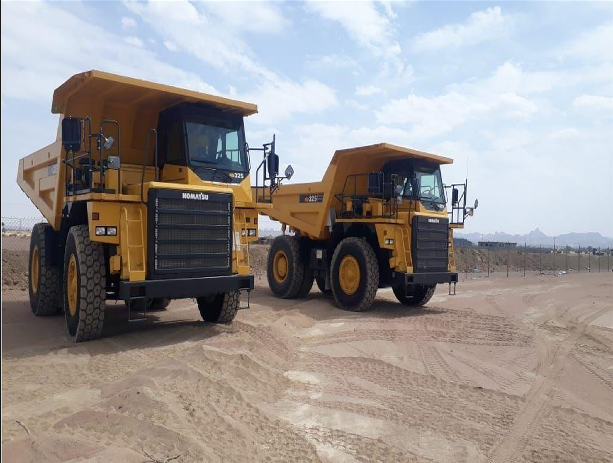
خبرة سعودية موثوقة منذ أكثر من 26 عامًا
حلول ميدانية متقنة
تبني الثقة بالإنجاز
خدمات التعدين والمحاجر والمقاولات وتأجير المعدات الثقيلة، تنفذها فرق متخصصة بأسطول يتجاوز 505 معدات ومركبات.
من نحن
خبرة ميدانية تحوّل التحديات إلى نتائج
شركة سعودية تقدم حلولاً متكاملة للقطاعات التعدينية والصناعية والإنشائية. نجمع بين الخبرة التشغيلية، والأسطول الكبير، والفرق المتخصصة لتنفيذ الأعمال بأمان وكفاءة وانضباط.
تعرّف على قصتنا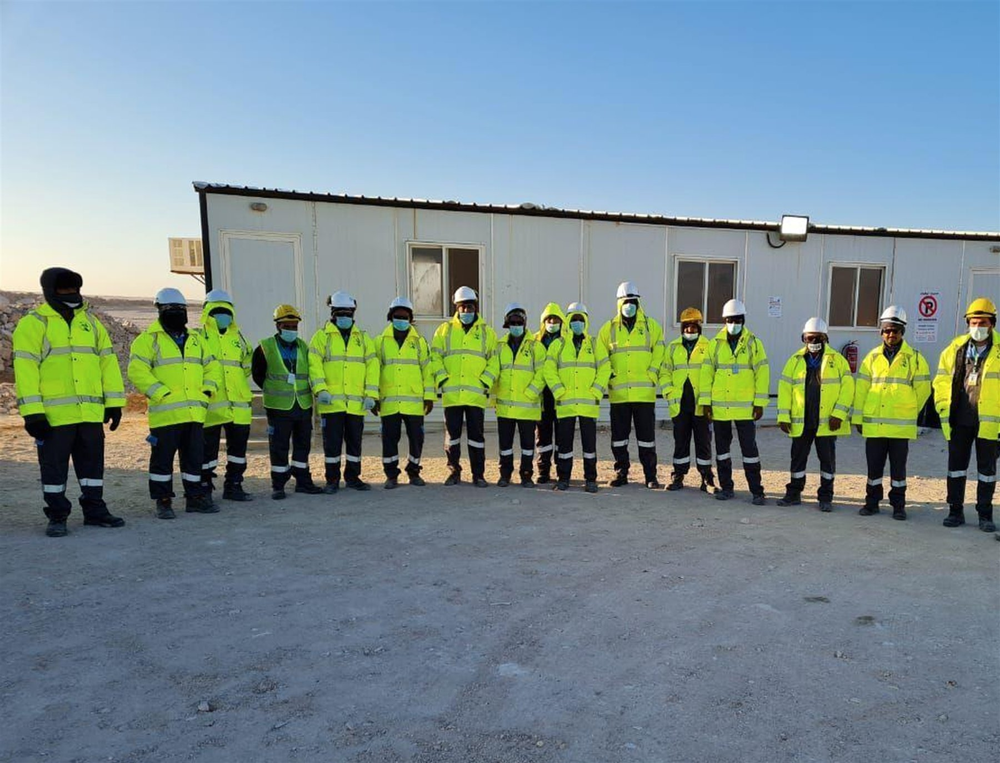
السلامة أولاً
جودة موثقة
جاهزية تشغيلية
خدماتنا
قدرات تغطي دورة المشروع
من دراسة الموقع والتخطيط إلى التنفيذ والتشغيل والتحميل والنقل.
01
02
03
04
عرض جميع الخدمات
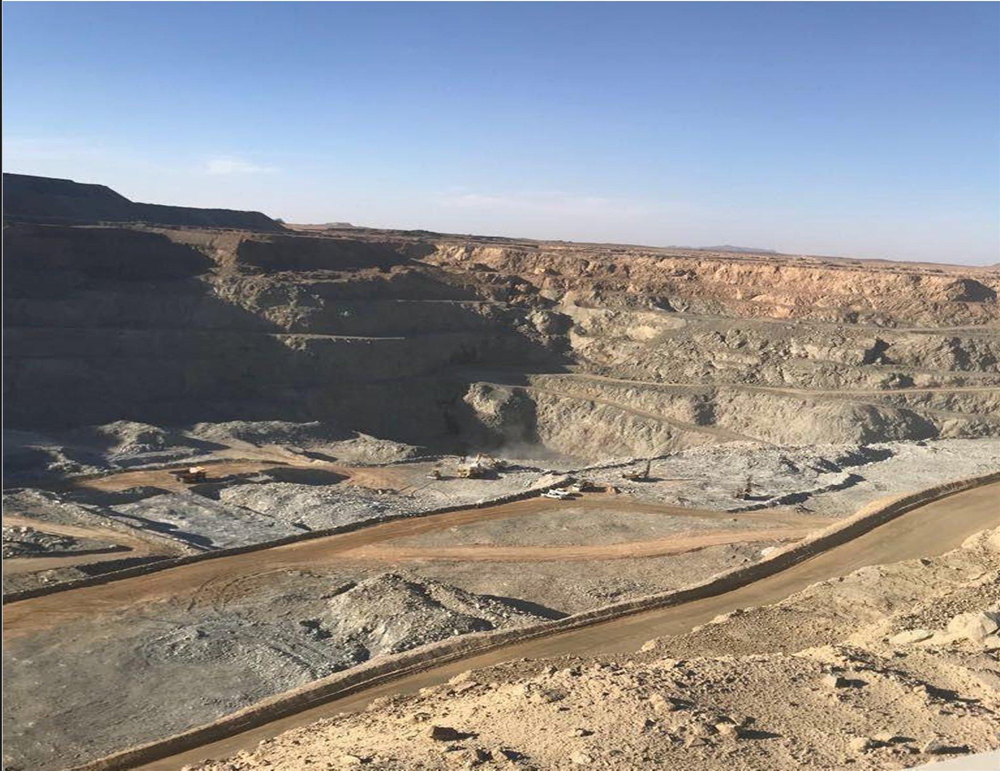
التعدين وإدارة المحاجر
تخطيط وتشغيل وإدارة الإنتاج والتحميل والنقل.
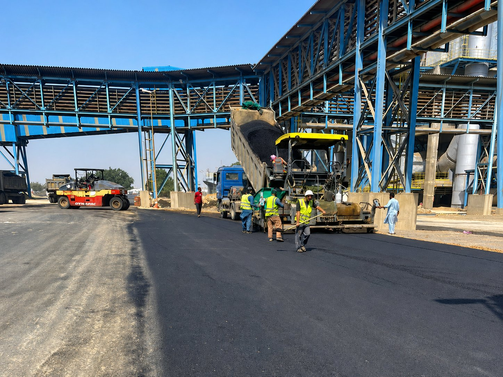
المقاولات والأعمال المدنية
أعمال ترابية وطرق وشبكات وبنية تحتية.
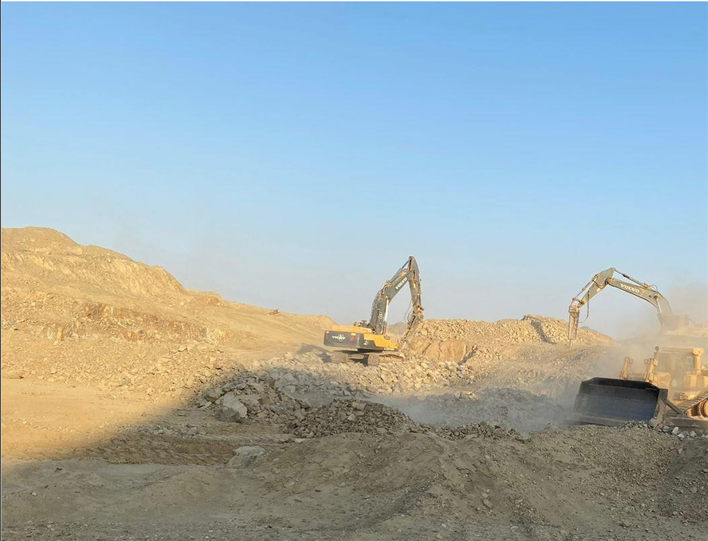
الحفر والاستكشاف
حفر ميداني ومسح داخل الآبار وتسجيل جيولوجي.
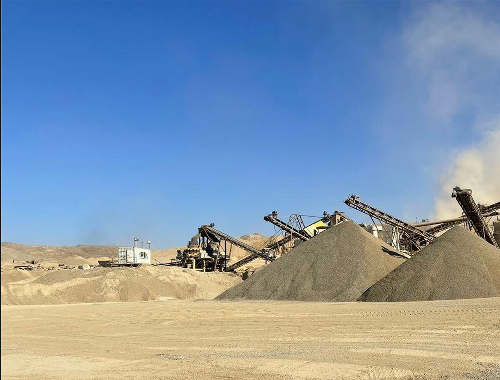
التكسير والنقل وتوريد المواد
معالجة ونقل وتوريد المواد بالمواصفات المطلوبة.
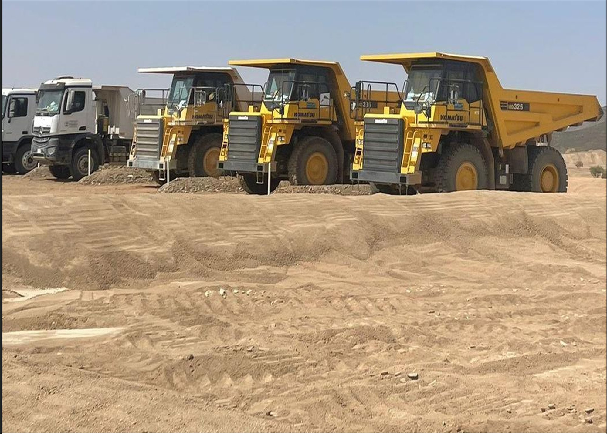
أسطول يتجاوز 505 وحدةالمعدات والتقنية
جاهزية عالية لأصعب بيئات العمل
حفارات ولوادر وجرافات وشاحنات ومعدات تكسير، مدعومة بالصيانة الوقائية والدعم الفني لرفع الإنتاجية وتقليل زمن التوقف.
التحميل والحفرالنقل الثقيلالدفع والتسويةالتكسير والمعالجة
استعرض الأسطول
مشاريعنا
إنجازات في قطاعات استراتيجية
من الميدان
قوة التنفيذ في كل موقع
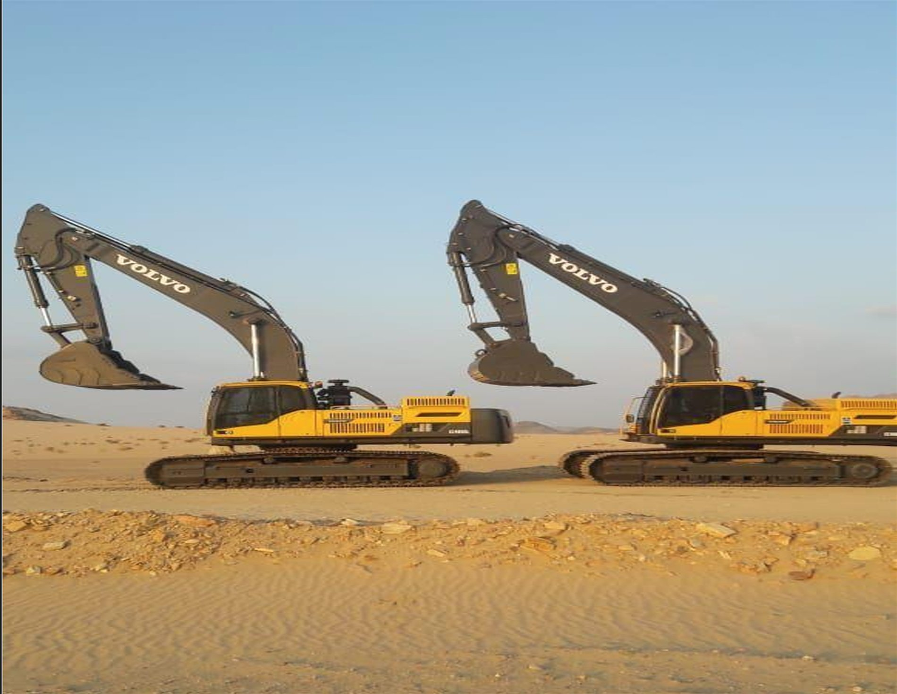
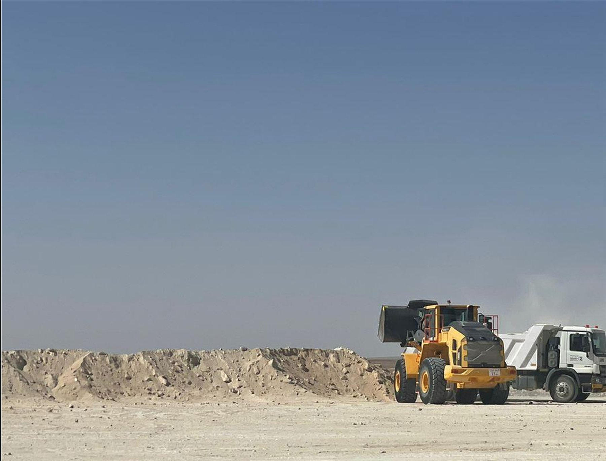
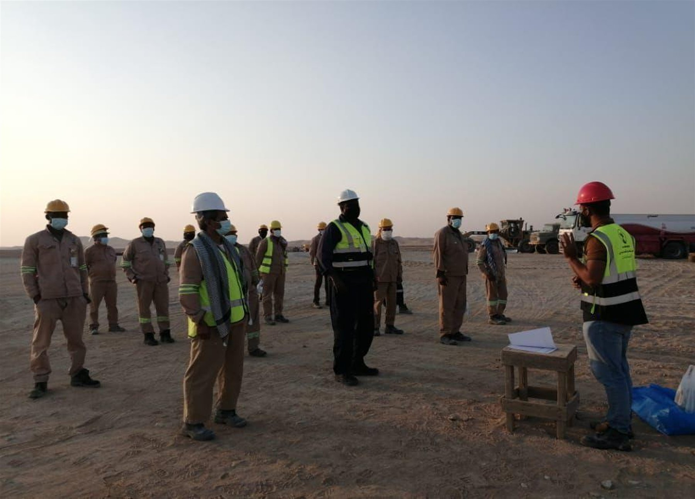
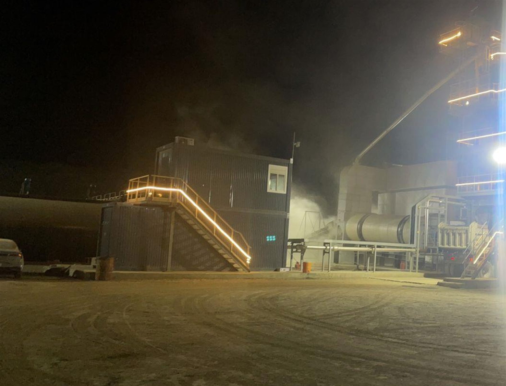
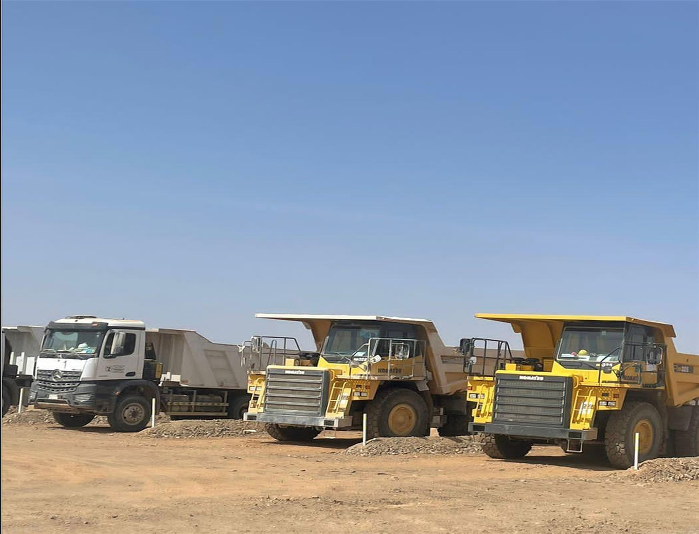
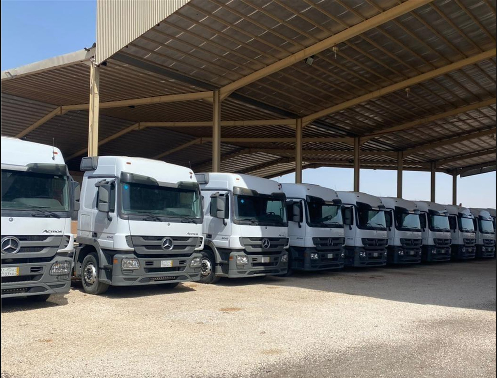
مشروعك القادم
لنحوّل التحدي الميداني إلى إنجاز
تواصل مع فريقنا لتحديد نطاق العمل والقدرات والمعدات المناسبة لمشروعك.